This is an overview of all work packages of the NASCENT-Peru project, which aims to create and simulate normative, nature-positive scenarios for future landscape development in Peru, assess their ecological and economic impacts, and communicate the results to relevant stakeholders.
The first step is the creation of the normative, nature-positive scenarios. But, before we discuss the scenario creation we want to clarify what is ment with “normative scenarios”.
 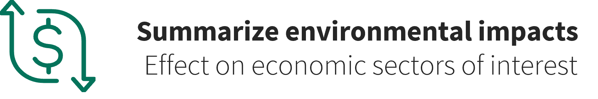
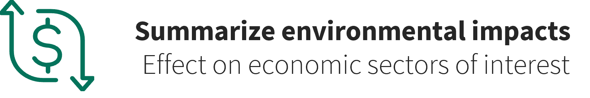
The workflow for creating normative nature-positive scenarios comprises three main steps:
1. Conducting workshops with relevant stakeholders to discuss future landscape development in Peru.
2. Drafting future-development narratives based on the workshop outcomes.
3. Quantifying narrative content using scientific literature to generate inputs for our computer models.
So let’s start with the workshops.
In May and June of 2024 we conducted a series of 5 workshops in different regions across Peru. We started off with a national workshop in Lima followed by four regional workshops in Piura, Puerto Maldonado, Huaraz and Tarapoto.
At the national workshop in Lima, we invited participants to:
1. Identify the key drivers shaping Peru’s future landscape.
2. Group those drivers into Social, Technological, Ecological, Economic, and Political categories.
3. Rank each driver by its anticipated impact.
As the bubble chart shows, the Political category (blue bubbles) leads in perceived importance (higher on the vertical axis). Its principal drivers are land-use planning policies (zoning and land ownership), weakness of government institutions (insufficient administrative capacity and widespread public distrust), modifications to forestry law (concession rules and enforcement mechanisms) and poor institutional coordination (overlapping mandates and unclear responsibilities). For the other categories, the single most significant drivers are:
• Social: demographic change (population growth and urbanisation)
• Technological: closing the energy gap (grid extension and reliable supply)
• Environmental: infrastructure projects (roads and dams)
• Economic: illegal economic activities (informal mining and logging)
Following the national workshop, we held four regional workshops and applied the Three Horizons Framework to guide discussions about the landscape across different temporal states.
The Three Horizons Framework divides system change into three time-based horizons:
• Horizon 1: the established, current state of the system
• Horizon 2: the emerging drivers or actions that reinforce or challenge that state
• Horizon 3: the aspirational, long-term future state
We adapted this framework for our workshops by defining Horizon 1 as each region’s current landscape, Horizon 2 as the national drivers identified in Lima that could support or impede change, and Horizon 3 as the desirable future landscape envisioned by participants.
In each of the regional workshops, participants:
1. Characterised the current landscape in their region.
2. Defined a desirable future landscape.
3. Evaluated the national drivers, judging for each whether it would support or impede the transition from the current landscape to the desirable future landscape.
Across all five workshops, 103 participants from more than 85 organisations took part. They represented five stakeholder groups:
• Academia
• Government officials
• NGOs/CBOs
• Private sector
• Practitioners
Together, the stakeholders identified over 700 statements about desirable future landscapes in Peru. Each regional workshop highlighted a clear priority. In the Andean Rainforest, participants prioritised agricultural production through industrialisation and technological innovation. In the Amazon Basin, participants focused on reducing mercury, plastics and other contaminants in rivers and soils. In the Andean Highlands, participants emphasised improved water management by capturing rainy season flows for year-round supply. On the Coast, participants highlighted biodiversity connectivity through expanded protected areas and alignment of economic planning with ecological zoning.
The regional workshops also revealed differing perspectives on whether certain drivers would support or hinder progress towards the desired future landscapes. The drivers highlighted in bold in the graphic are those where the workshops expressed particularly divergent views regarding their influence on achieving regional visions.
The next step was to synthesise the information collected from all workshops into coherent narratives.
We translated all statements collected from the workshops into English, then extracted those describing desirable landscape characteristics. These statements were arranged systematically and combined where appropriate, resulting in a final set of 60 unique statements.
To prepare for narrative development, we organised the 60 unique statements into thematic groups using the Nature Futures Framework (NFF), developed by the Intergovernmental Science-Policy Platform on Biodiversity and Ecosystem Services (IPBES). The NFF maps positive visions of human–nature relationships along three value axes:
Nature for Nature: viewing nature as having intrinsic value and deserving respect regardless of human benefit.
Nature for Society: recognising the instrumental value of nature in providing ecosystem services that support people.
Nature as Culture: valuing the relational connections between people and nature through culture, identity, and traditional practices.
In the next step, we conducted an internal exercise within our research group, in which we individually positioned all statements within the triangular space defined by the NFF.
A subsequent k-means clustering was conducted to group the statements objectively. By calculating the silhouette score across 1000 runs per cluster number (k), we found that the optimal number of clusters was three. We therefore assigned each statement to one of three groups, each aligned with one axis of the Nature Futures Framework.
After assigning each statement to one of these groups, we assessed the level of agreement among individual placements. In the image, the red dots represent these individual responses, while the black dot indicates the average position.For some statements, there was strong agreement among individual responses regarding their placement.
For other statements, there was more disagreement. In those cases, we discussed the positions as a group to agree upon a final placement.
In the end, each statement was assigned to one of the three axes of the Nature Futures Framework. Statements that corresponded to more than one value perspective are situated between the axes in the image. This grouping formed the foundation for developing the scenario narratives.
We summarised similar drivers from the national workshop into single, broader drivers where appropriate. In the next step, we linked each statement to the relevant drivers to describe how future landscape change could unfold in relation to each driver under each scenario. In addition to the three normative scenarios, each linked to one axis of the Nature Futures Framework, we also developed an exploratory Business as Usual scenario for contrast. All linked statements were further enriched with information from an extensive literature review.
Finally, we developed the narratives for each scenario through an iterative writing process, incorporating two rounds of feedback to ensure clarity and coherence. In each narrative, we systematically integrated the grouped statements, linked drivers, and insights from the literature review, grounding every scenario in both stakeholder perspectives and scientific evidence.
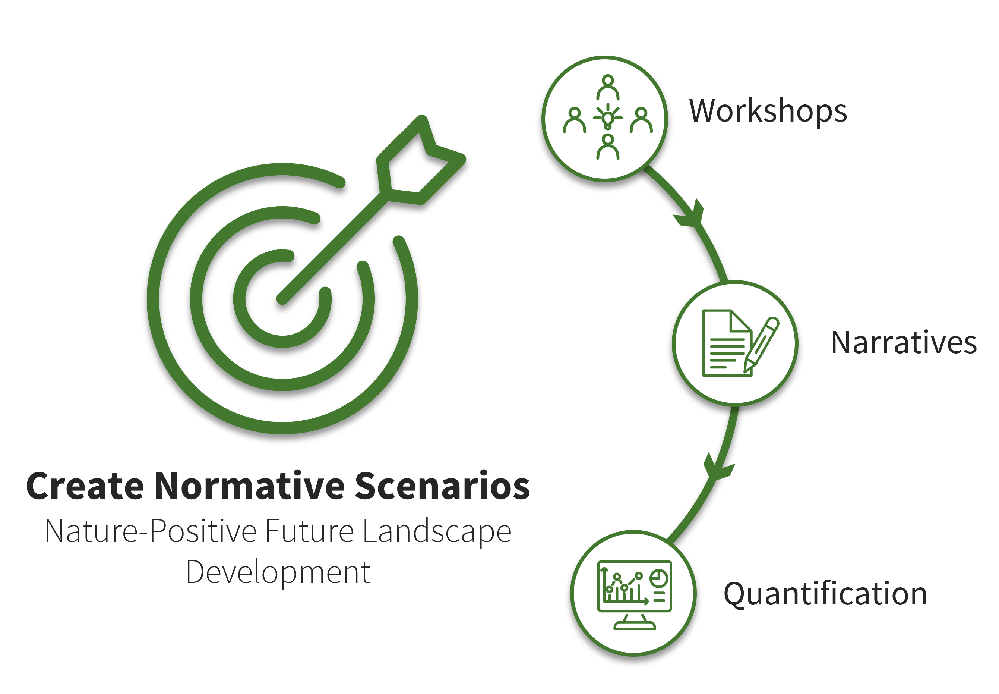
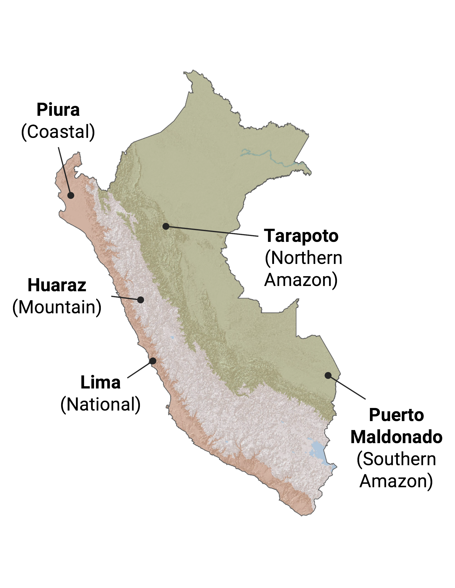
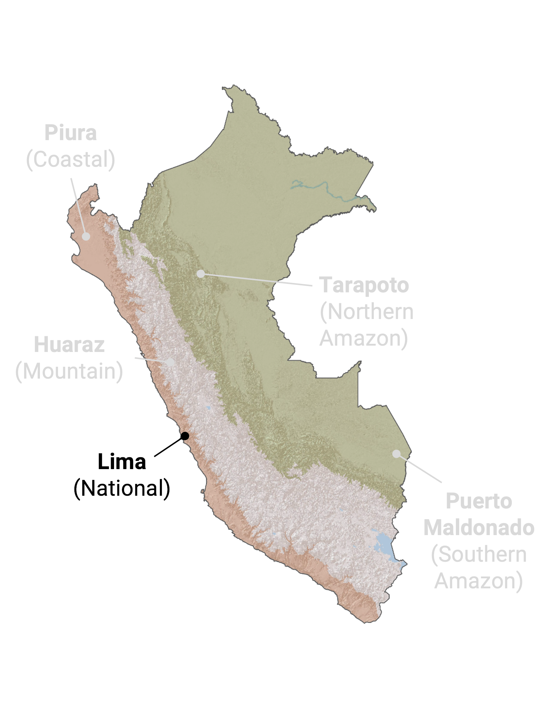

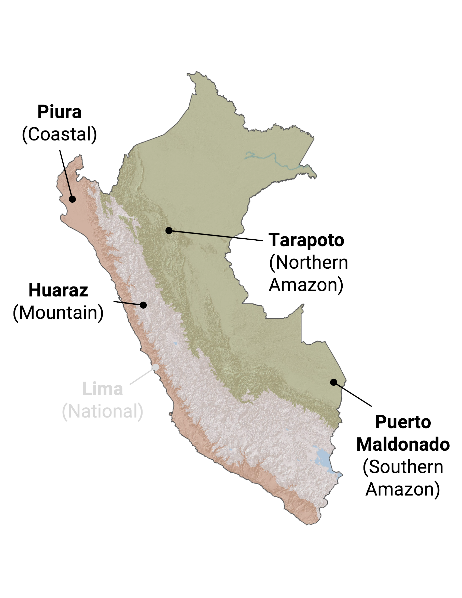
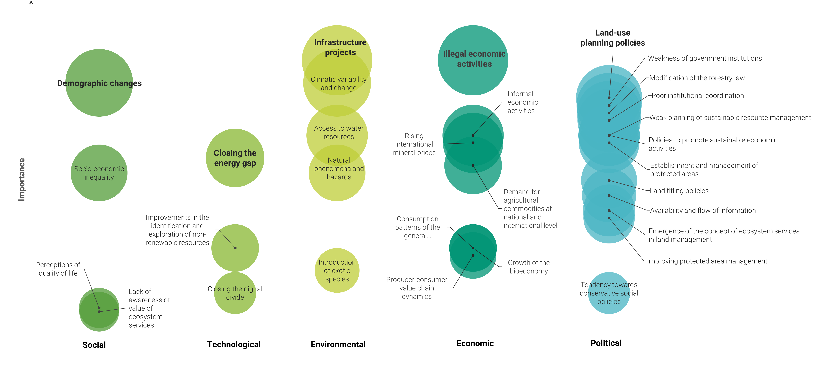
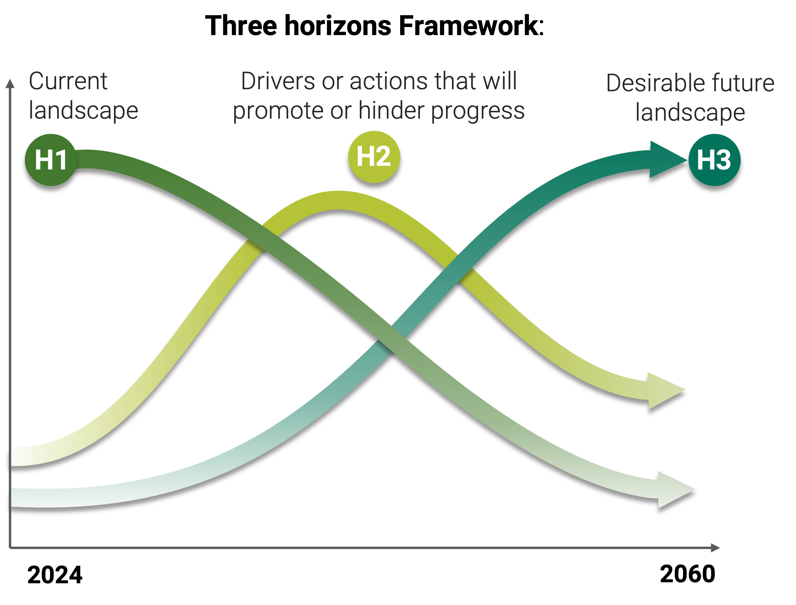

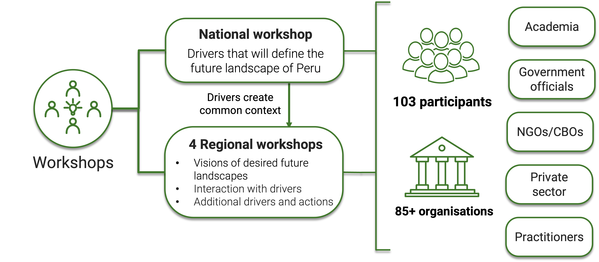
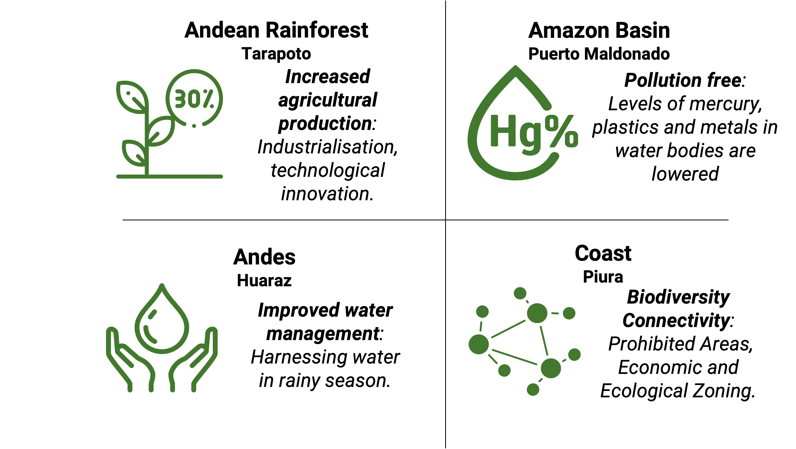
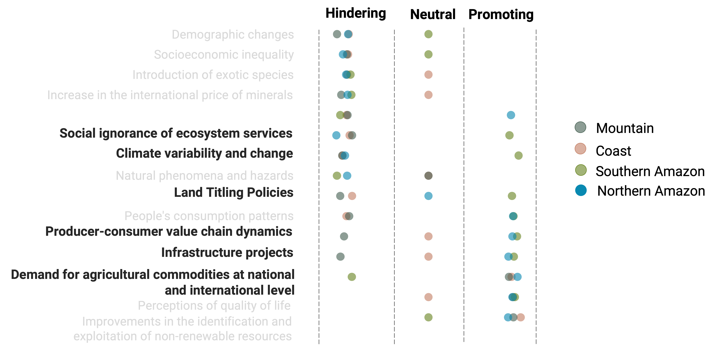


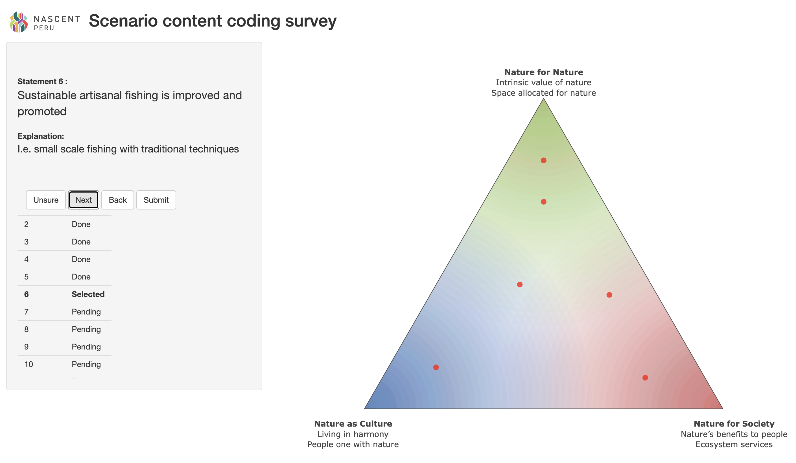
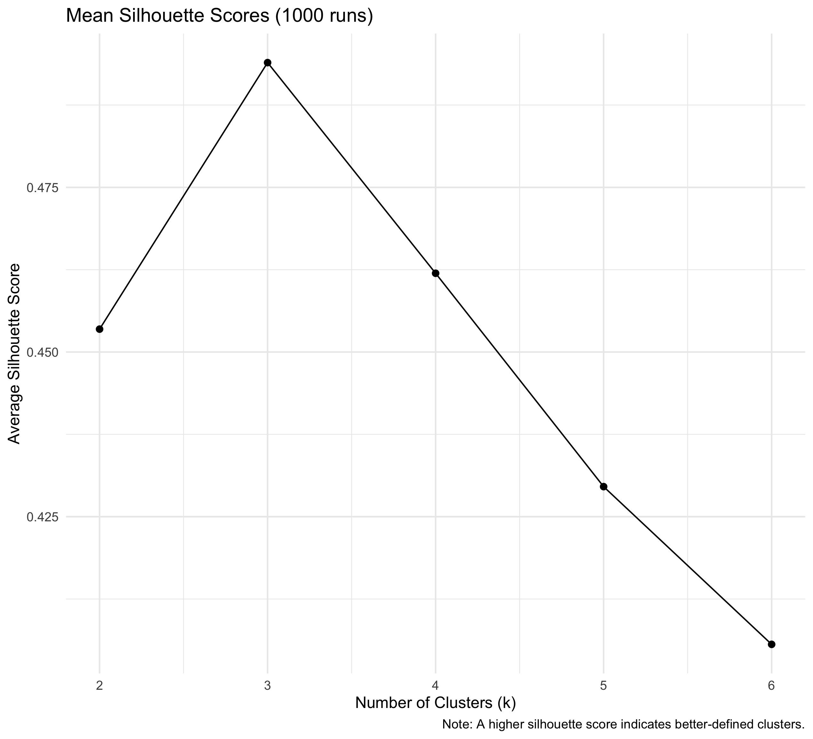
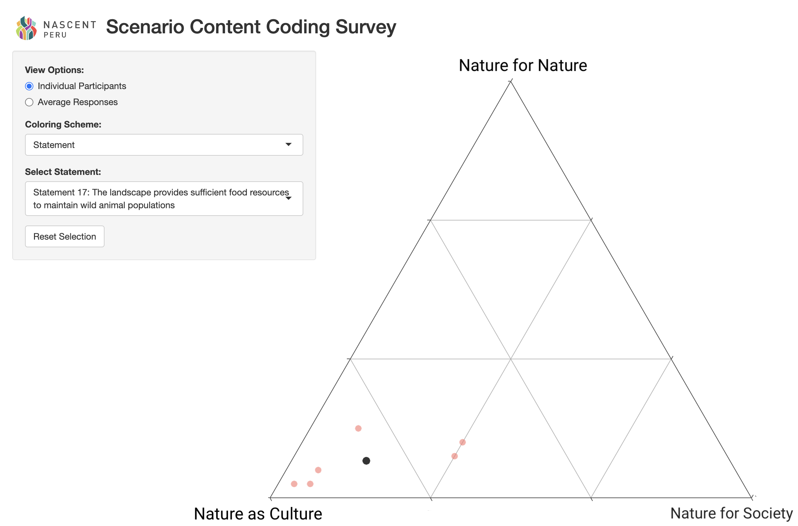
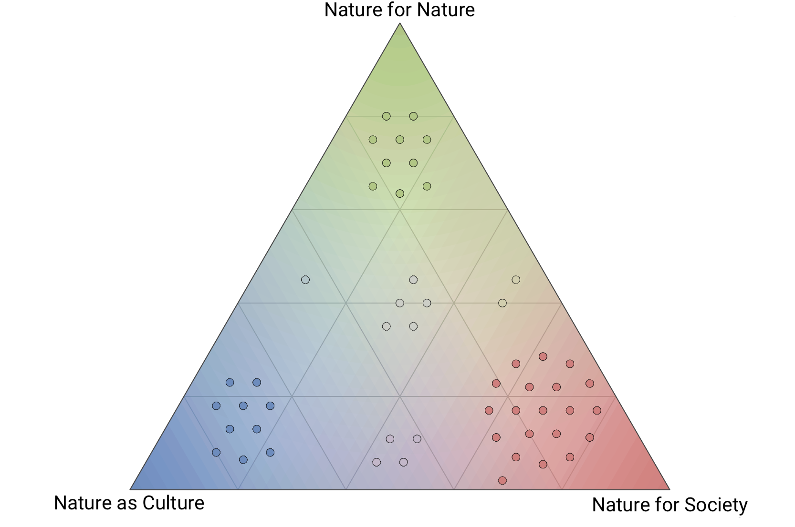
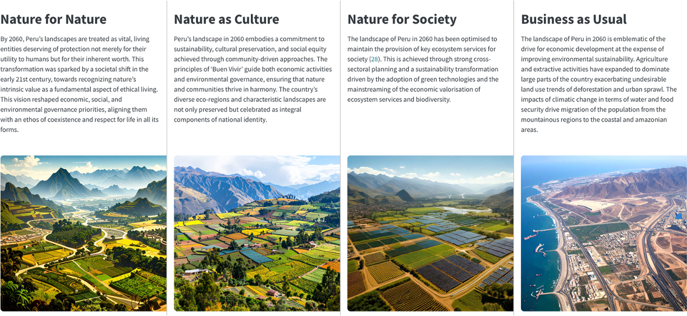